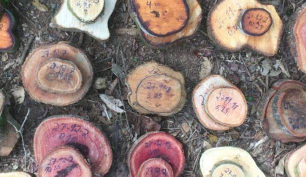
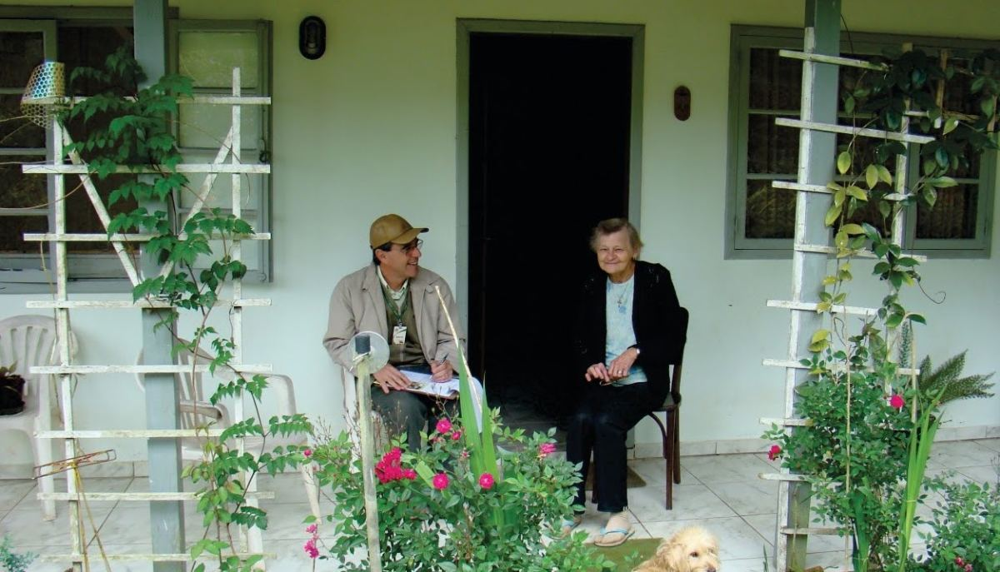
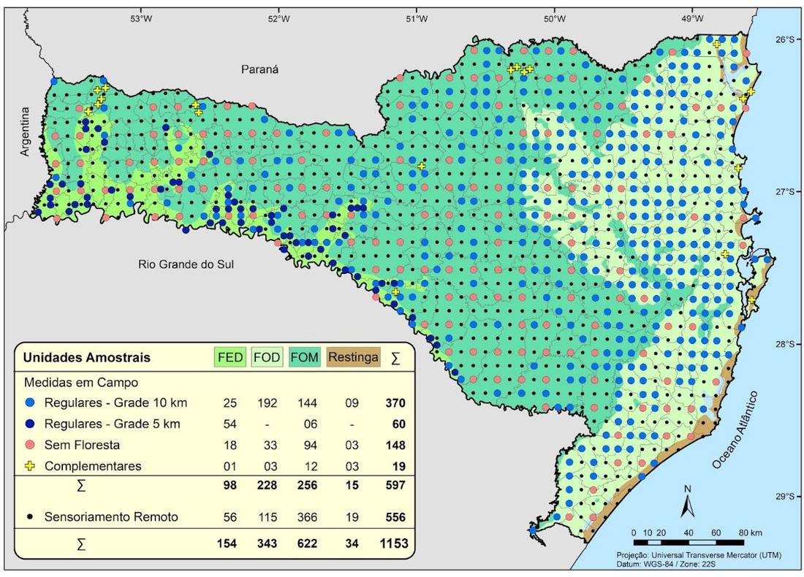
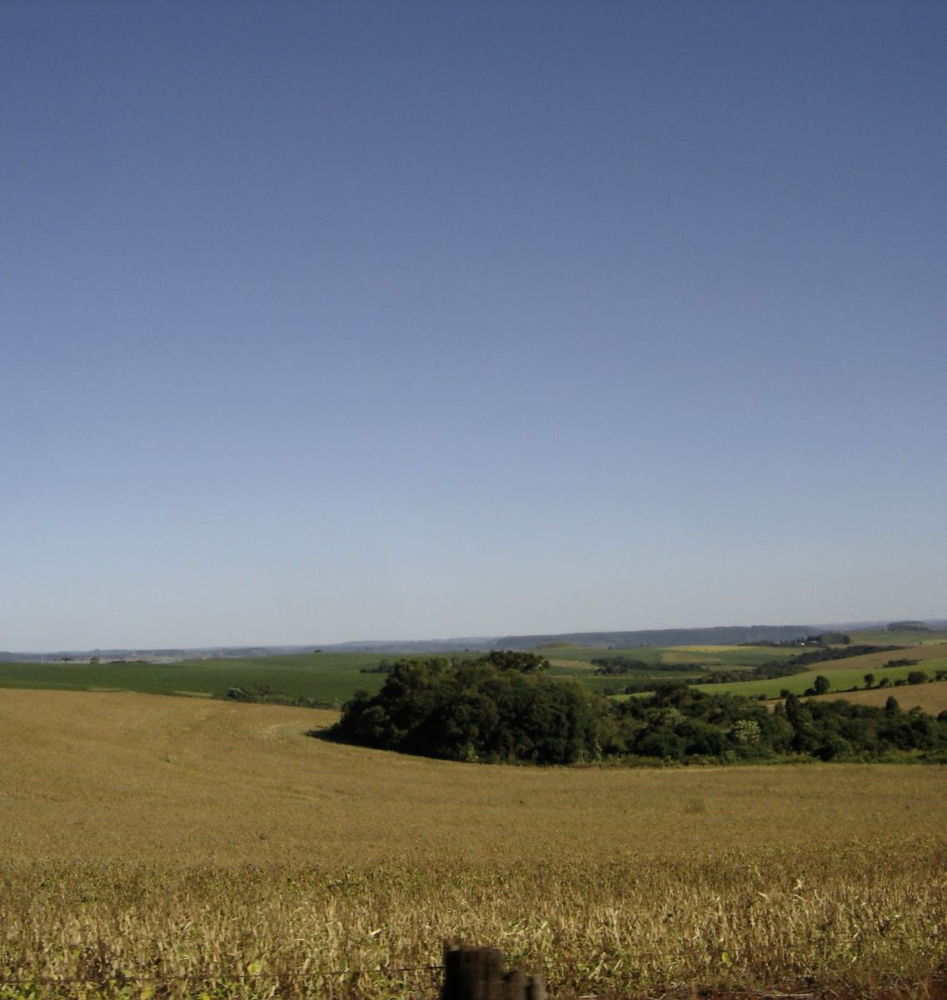
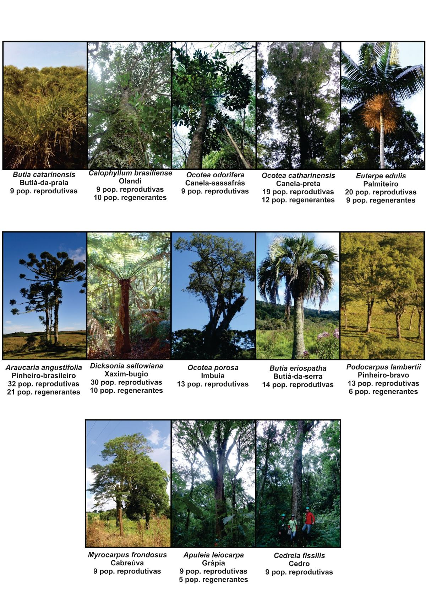
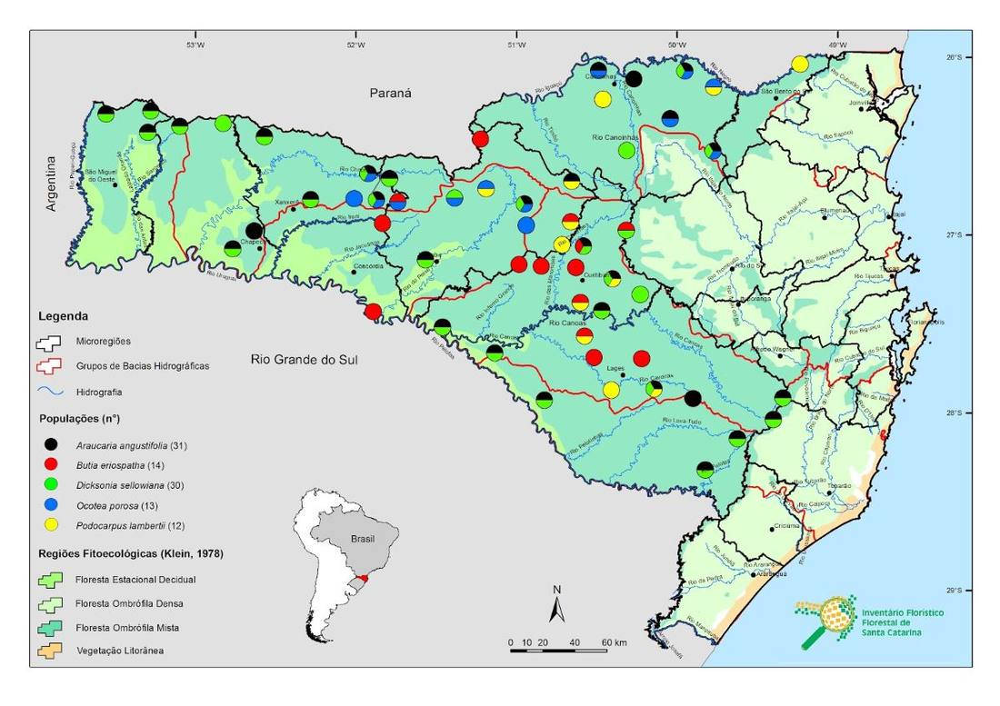

Translated from the Portuguese original. Publication titles, citations and names are kept in their original language.
In line with the Brazilian National Forest Inventory (IFN/BR) methods, FlorestaSC uses sampling on multiple occasions with the possibility of full re-sampling, with sample plots (UAs) systematically distributed on a grid of points covering the whole state.
Plots were selected after a preliminary stratification into 'forest' and 'non-forest' based on satellite images. Sampling used fixed-area cluster plots. Full repeated sampling requires permanent plots so they can be re-measured.


The first systematic surveys of the Santa Catarina flora were carried out from the 1950s to the 1970s and produced a large body of information that supported the publication of the Flora Ilustrada Catarinense. This work placed Santa Catarina among the leading Brazilian states in knowledge of native plant species. The last quantitative inventory of the state's forests was carried out in the 1980s by the Brazilian Institute for Forest Development (IBDF).
Knowing the extent, composition and conservation status of forests is essential for forest policy, which covers socio-economic aspects, the maintenance and use of forest resources, and nature conservation in protected areas and on private land.
FlorestaSC carries out several studies. See the methods of each one:

Our study area

Inventory of forest remnants

Floristics (FURB Herbarium)

Biometrics (metria)

Genetic diversity

Socio-environmental survey
FlorestaSC
florestasc@furb.br 47 3221-6100
Study area
Santa Catarina – our study area
The state of Santa Catarina lies in southern Brazil and covers 95,738 km², with 295 municipalities and about 7 million inhabitants.
Santa Catarina has two climate types under the Köppen classification: humid subtropical with hot summers (Cfa) and oceanic subtropical with mild summers (Cfb). Mean annual temperatures range from 10 °C to 22 °C, mean annual rainfall from 1,100 to 2,900 mm, and mean annual relative humidity from 80 to 86% (Climatological Atlas of Santa Catarina – Ciram/Epagri).
Santa Catarina lies entirely within the Atlantic Forest biome, which has different vegetation types shaped by altitude, relief, soil and climate.
The main vegetation types in the state are:
Dense Ombrophilous Forest (FOD)
It extends along the whole coast and coastal mountains of the state. It is a closed, very humid forest with several layers of plants (strata). One of its most characteristic species is the juçara palm, along with ferns, fig trees, laurels, guamirins and many lianas, bromeliads, orchids and other epiphytes (plants that attach to trees). It originally covered 31% of the state (also called Rain Forest).


Mixed Ombrophilous Forest (FOM)
It occurs on the Santa Catarina plateau above 500 m, mainly between 800 and 1,200 m, and is adapted to lower temperatures. It is also called Araucaria Forest, as this is its main species. It also hosts many broadleaved species, including imbuia (Ocotea porosa), the state's symbol tree. It originally covered 45% of the state (also called Mixed Seasonal Forest).


Seasonal Deciduous Forest (FED)
It occurs in the west of the state, near the Uruguay River and the border with Argentina. In this forest type, some of the trees lose their leaves in the coldest season. It is a more open forest full of lianas, with important timber species such as canafístula, grápia and angico-vermelho. It originally covered 8% of the state (also called Semi-deciduous Forest).


Natural grasslands
They are associated with the FOM and dominated by herbaceous vegetation with high species richness. They originally covered 14% of the state (also called Ombrophilous Steppe or grassland vegetation).

Coastal vegetation (restinga and mangroves)
The Santa Catarina coast is about 460 km long. Here we find restinga – pioneer vegetation on sandy deposits – and mangroves, associated with lagoons, bays and estuaries subject to the tides. Coastal vegetation originally covered 2% of the state.
Phytogeographic map of Santa Catarina, based on the map by Dr. Roberto Miguel Klein (1978).
Diagram of the main vegetation types in the state.
FlorestaSC's main results refer to the state's three main vegetation types – FOD, FOM and FED – because sampling coverage is greatest in these forest types.
Klein, R.M. 1978. Flora Ilustrada Catarinense: Mapa fitogeográfico do Estado de Santa Catarina. Itajaí. Herbário Barbosa Rodrigues.
Field inventory
Inventory of forest remnants
Lead institution:
Regional University of Blumenau (FURB)
Coordinator:
Prof. Dr. Alexander Christian Vibrans
Aim:
To assess species composition, structure (diameter, vertical and horizontal) and forest dynamics using data from the continuous inventory of permanent sample plots across the state.
To learn more, see the Field Manual and the paper 'IFFSC – Aspectos Metodológicos'.
FlorestaSC uses a method compatible with that of the Brazilian National Forest Inventory (IFN), but with a denser grid and broader inclusion criteria to meet the state's specific needs.
The method is based on a systematic inventory on multiple occasions, with sampling repeated every five years, to provide information and monitor the conservation status of forest resources and the changes over time.
'Forest' follows the FAO (2009)* definition: land of at least 0.5 ha with trees taller than 5 m and canopy cover ≥ 10%.
Data collection follows 1,074 sample plots (UAs) on a systematic 10 × 10 km grid covering the whole state, compatible with the IFN's 20 × 20 km grid. Exceptionally, in the range of the Seasonal Deciduous Forest (Klein, 1978), which is extremely reduced and fragmented, the grid is densified to 5 × 5 km to measure enough additional plots, for a total of 1,153 plots monitored by FlorestaSC.

In short...
FlorestaSC sample plots serve different purposes:
- 556 plots assessed by remote sensing only: used to define and quantify land use by interpreting satellite images;
- 430 regular plots: field assessment of well-developed forests (intermediate and advanced successional stages), of which 370 belong to the 10 × 10 km grid and 60 to the 5 × 5 km grid. In 33 plots of the 10 × 10 km grid, in Dense Ombrophilous Forest, epiphytes were also surveyed;
- 148 'outside forest' plots: placed in other land uses, including poorly developed forests (early successional stage), plantations, pastures and farmland with scattered trees.
- 19 complementary plots: outside the systematic grids, in apparently well-preserved public and private forests.

Sample plot
The FlorestaSC sample plot is a cluster with a total area of 4,000 m² (0.4 ha), made up of four 1,000 m² subplots (20 × 50 m) oriented towards the four cardinal points (north, south, east and west), each 30 m from the centre of the cluster.
The image below shows the current layout of the FlorestaSC cluster, with the subplots and transects used to measure the different strata.
Note:
Below are the updated, final methods for the inventory of each stratum, after methodological adjustments made following the first published results.
Inclusion criteria
Trees/shrubs: DBH ≥ 10 cm and height ≥ 1.3 m;
Regeneration: DBH < 10 cm and height ≥ 1.3 m;
Herbaceous layer: dominant herbaceous species in the subplot;
Necromass: dead branches and stems > 2.5 cm in diameter crossing the two transects at the centre of the plot.
Survey of trees outside forests
A further 148 plots were installed on the 20 × 20 km grid to survey trees 'outside forests', at points where the state forest cover maps of 2005 (SAR, 2005) and 2008 (PPMA, 2008) showed no native forest.
Land-use data were recorded in these plots whether or not they were forested (50 were in early-successional forests, 34 in plantations and 64 in farmland, pasture or built-up areas).

Epiphyte survey
Epiphytes are plants that grow on other plants without taking nutrients from them, such as orchids, bromeliads and ferns. Plants that do take nutrients are parasites, such as mistletoe (Struthanthus sp.).
A separate survey focused on vascular epiphytes was carried out in the Dense Ombrophilous Forest. Thirty-three FlorestaSC plots were selected and a circular area with an 80 m radius was marked around each one. At least eight host trees (phorophytes) per plot were climbed using tree-climbing techniques, and all fertile vascular epiphytes were collected. Epiphytes were also collected on the ground when within reach – on fallen branches, saplings, lianas and tree ferns.

More details in the Field Manual and the paper 'IFFSC – Aspectos Metodológicos'.
*FAO. 2009. National Forest Monitoring and Assessment – Manual for integrated field data collection. NFMA Paper37/N. Roma. FAO.
Biometrics
Lead institution:
Regional University of Blumenau (FURB)
Coordinator:
Prof. Dr. Alexander Christian Vibrans
Aim:
To develop statistical models to predict the height, volume, diameter and biomass of individual trees, supporting scientific studies, population estimates and forest management in Santa Catarina.
Managing secondary forests can go hand in hand with conservation. High-quality technical information is essential for this.
From the start of its fieldwork, FlorestaSC carried out rigorous stem volume measurements and tree height measurements in sample plots across the state. Field teams, including trained tree climbers, measured the volume of more than 1,000 standing stems and the height of more than 2,000 trees with specialised instruments.
Since 2014, FlorestaSC has also collected data in an area in Guaramirim – SC under authorised forest management, through a technical-scientific cooperation agreement between the Santa Catarina Environment Foundation (FATMA) and the Federal University of Santa Catarina (UFSC).
Height
Total tree height is hard to measure in the field, especially in native forests with tall, closed canopies. The most accurate field estimates usually come from instruments based on trigonometry, such as the hypsometer. Even so, measuring every tree in a plot with instruments is not feasible. Based on more than 2,000 trees measured with instruments, FlorestaSC developed statistical models to estimate total tree height from diameter, which is easier to measure in the field. More specifically, FlorestaSC focuses on:
(i) developing generic and species-specific models to estimate the height of native species;
(ii) studying height–diameter relationships of different species and forest types.
Publications
Oliveira, L.Z.; McRoberts, R.E.; Liesenberg, V.; Vibrans, A.C. Appraising the effects of tree height prediction uncertainty on large-scale estimates for mean wood volume per unit area for a subtropical population. Canadian Journal of Forest Research, v. 56, p. 1-16, 2026. http://dx.doi.org/10.1139/cjfr-2025-0247
Vibrans, A.C.; Moser, P.; Oliveira, L.Z.; Macaneiro, J.P. Height-diameter models for three subtropical forest types in southern Brazil. Ciência e Agrotecnologia, v. 39, p. 205-215, 2015. http://dx.doi.org/10.1590/S1413-70542015000300001


Volume
Information on timber stocks is essential for forest management and for public policies that regulate the use and conservation of forest resources. FlorestaSC studies the volume of more than 200 native species, including licurana (Hieronyma alchorneoides) and jacatirão (Miconia cinnamomifolia), two species with valuable timber that are abundant in secondary stands of the Dense Ombrophilous Forest in SC. More specifically, FlorestaSC focuses on:
(i) developing generic and species-specific models to estimate stem volume and total volume;
(ii) developing generic and species-specific taper models;
(iii) developing bark factors;
(iv) studying methods to reduce uncertainty in large-area estimates of volume per unit area.
Oliveira, L.Z.; Vibrans, A.C. Evaluating trade-offs between using regional and site-specific allometric models to predict growing stock volume of subtropical Atlantic forests. Forest Science, v. 68, p. 365-375, 2022. https://doi.org/10.1093/forsci/fxac021
Oliveira, L.Z.; Klitzke, A.R.; Fantini, A.C.; Uller, H.F.; Correia, J.; Vibrans, A.C. Robust volumetric models for supporting the management of secondary forest stands in the southern Brazilian Atlantic Forest. Anais da Academia Brasileira de Ciências, v. 90, p. 3729-3744, 2018. http://dx.doi.org/10.1590/0001-3765201820180111
Vibrans, A.C.; Moser, P.; Oliveira, L.Z.; Maçaneiro, J.P. Generic and specific stem volume models for three subtropical forest types in southern Brazil. Annals of Forest Science, v. 72, p. 865-874, 2015. https://doi.org/10.1007/s13595-015-0481-x
McRoberts, R.E.; Moser, P.; Oliveira, L.Z.; Vibrans, A.C. A general method for assessing the effects of uncertainty in individual tree volume model predictions on large area volume estimates with a sub-tropical forest illustration. Canadian Journal of Forest Research, v. 45, p. 44–51, 2015. https://dx.doi.org/10.1139/cjfr-2014-0266


Biomass
Plants capture CO2 (carbon dioxide) released by natural biological processes (e.g. respiration, decomposition) and by human activities (e.g. burning of fossil fuels and forests) and store it as organic carbon in their biomass. Given the lack of information on the biomass of Santa Catarina's forests, FlorestaSC destructively measured the aboveground biomass of more than 130 trees in a stretch of Dense Ombrophilous Forest in Guaramirim – SC, producing data to develop statistical models that estimate a tree's dry biomass from variables such as diameter, height and wood density. More specifically, FlorestaSC focuses on:
(i) developing generic and species-specific models to estimate aboveground dry biomass of native species with different life and growth forms;
(ii) determining the basic wood density of native species to reduce uncertainty in biomass estimates;
(iii) studying methods to reduce uncertainty in large-area estimates of biomass/carbon per unit area.
Oliveira, L.Z.; Vibrans, A.C. Common allometric aboveground biomass models for two Atlantic forest tree ferns. Floresta e Ambiente, v. 33, e20260030, 2026. https://doi.org/10.1590/2179-8087-FLORAM-2026-0030
Oliveira, L.Z.; McRoberts, R.E.; Vibrans, A.C.; Liesenberg, V.; Uller, H.F. Comparing effects of uncertainty in predictions of local and pantropical allometric models on large-area estimates for mean aboveground biomass per unit area. Forestry: An International Journal of Forest Research, v. 98, p. 661–675, 2025. https://doi.org/10.1093/forestry/cpaf008
Oliveira, L.Z.; Vibrans, A.C.; Nicoletti, A.N.; Lerner, J. Allometric mixed-effects models for Dicksonia sellowiana Hook. and its contribution to biomass stocks of Araucaria forests in southern Brazil. Anais da Academia Brasileira de Ciências, v. 96(supl. 3), e20230176. https://www.scielo.br/j/aabc/a/sbPqHSfmrX5XDpBFnw7tTYD/?format=pdf&lang=en
Uller, H.F.; Oliveira, L.Z.; Klitzke, A.R; Freitas, J.V.; Vibrans, A.C. Biomass models for three species with different growth forms and geographic distribution in the Brazilian Atlantic Forest. Canadian Journal of Forest Research, v. 51, p. 1419-1431, 2021. https://dx.doi.org/10.1139/cjfr-2020-0215
Uller, H.F.; Oliveira, L.Z.; Vibrans, A.C.; Klitzke, A.R; Eleotério, J.R. Aboveground biomass quantification and tree-level prediction models for the Brazilian subtropical Atlantic Forest. Southern Forests, v. 81, p. 261–271, 2019. https://doi.org/10.2989/00306525.2019.1581498
Oliveira, L.Z.; Uller, H.F.; Klitzke, A.R; Eleotério, J.R; Vibrans, A.C. Towards the fulfillment of a knowledge gap: Wood densities for species of the subtropical Atlantic Forest. Data, v. 4, p. 104, 2019. https://doi.org/10.3390/data4030104


Floristics and FURB Herbarium
Visit the official FURB Herbarium website:
Download the booklet about the FURB Herbarium:
Learn about the Botany Laboratory too
Genetic diversity
Lead institutions:
Federal University of Santa Catarina (UFSC) and Santa Catarina State University (UDESC)
Coordinators:
Maurício Sedrez dos Reis (UFSC) and Adelar Mantovani (UDESC)
Aim:
To assess the genetic diversity of populations of threatened species and/or species of economic or social importance.
Genetic diversity underlies the ability of any species to develop and adapt to biotic and environmental changes over time. Studying it therefore helps assess the long-term survival capacity of species. One of FlorestaSC's aims was to assess the genetic diversity of populations of threatened species or species of economic and social importance. Thirteen species were selected for this study (see below).
In a first phase, from 2007 to 2011, the study focused on populations of reproductive individuals. Later, as FlorestaSC continued, the focus shifted to regenerating individuals of the same species, sampled in the same fragments where the adults had been studied. This made it possible to understand how genetic diversity changes over time – in other words, how much (a lot, a little or none) of it passes from one generation to the next. In the second phase FlorestaSC also examined the relationship between landscape and genetic diversity, to understand the possible influence of current land use on the species' genetic diversity indices.
The sampling and analysis methods were the same for reproductive and regenerating individuals. In each selected fragment, leaf samples were collected from 50 individuals spaced 50 m apart. In the laboratory, samples were analysed with isozyme markers to measure genetic diversity. An isozyme marker is simply a mark linked to the plant's DNA that distinguishes one individual from another.
Species assessed genetically
*with the number of populations of reproductive and regenerating individuals analysed




florestasc@furb.br 47 3221-6100
Socio-environmental survey
Lead institution:
Santa Catarina Agricultural Research and Rural Extension Company – Centre for Socioeconomics and Agricultural Planning (Epagri/CEPA)
Coordinators:
Luiz Toresan
Aim:
Identifying the most important species from a socio-economic and cultural point of view, with their current and potential uses, through interviews with farmers living near FlorestaSC plots and consultations with experts.
For the socio-environmental study on the use of native forest resources in Santa Catarina, a questionnaire was applied to residents around 123 FlorestaSC clusters (103 municipalities). In total, 777 rural residents and 130 experts were interviewed.
Around each sampling point, within a radius of up to three kilometres, five to ten of the nearest residents were interviewed – one per household and only if they lived in the rural area. Interviewees were chosen to give equal gender representation (50% men and 50% women).


The information collected made it possible to assess interviewees' relationships with, and perceptions of, the existence and use value of natural forests and the legal aspects of environmental policy.
Page migrated from floresta.sc.gov.br.